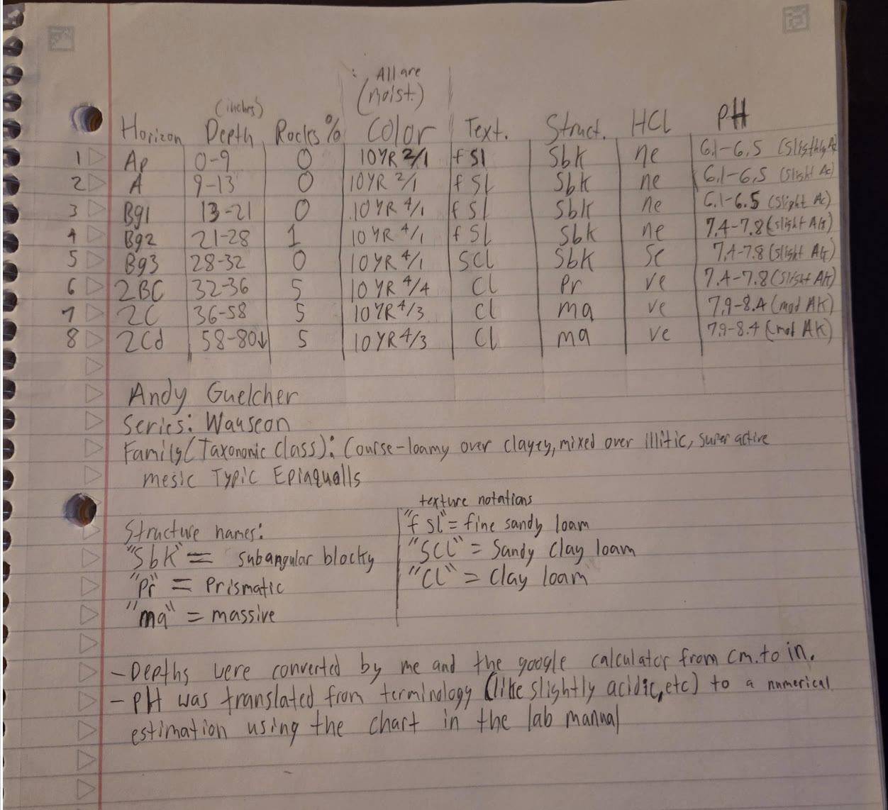
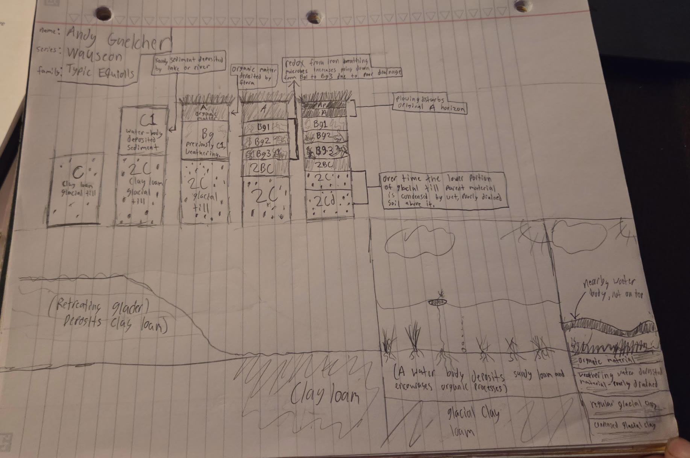

Wauseon
Andy Guelcher's favorite soil: a dark, poorly drained Mollisol of sandy water-laid sediment over clay loam glacial till.
Classification
- Series
- Wauseon
- Order
- Mollisols
- Suborder
- Aquolls
- Great group
- Epiaquolls
- Subgroup
- Typic Epiaquolls
- Family
- Coarse-loamy over clayey, mixed over illitic, superactive, mesic Typic Epiaquolls
DRoCTS+ table
| Horizon | Depth in | Rocks % | Color moist | Texture | Structure | HCl effervescence | pH |
|---|---|---|---|---|---|---|---|
| Ap | 0–9 | 0 | 10YR 2/1 | fsl | sbk | ne | 6.1–6.5 |
| A | 9–13 | 0 | 10YR 2/1 | fsl | sbk | ne | 6.1–6.5 |
| Bg1 | 13–21 | 0 | 10YR 4/1 | fsl | sbk | ne | 6.1–6.5 |
| Bg2 | 21–28 | 1 | 10YR 4/1 | fsl | sbk | ne | 7.4–7.8 |
| Bg3 | 28–32 | 0 | 10YR 4/1 | scl | sbk | sc | 7.4–7.8 |
| 2BC | 32–36 | 5 | 10YR 4/4 | cl | pr | ve | 7.4–7.8 |
| 2C | 36–58 | 5 | 10YR 4/3 | cl | ma | ve | 7.9–8.4 |
| 2Cd | 58–80 | 5 | 10YR 4/3 | cl | ma | ve | 7.9–8.4 |
Texture: fsl, fine sandy loam; scl, sandy clay loam; cl, clay loam. Structure: sbk, subangular blocky; pr, prismatic; ma, massive.
Depths converted from centimetres to inches. pH ranges estimated from the reaction classes in the series description using the lab manual chart.

A groupmate's table, scored
To add. A screenshot of the DRoCTS+ rubric filled out for one groupmate's table.
- Save the screenshot into the
assetsfolder. - Replace this box with a
<figure class="plate">like the one above, and say whose table it is in the caption.
How it formed

- A retreating glacier leaves clay loam till, the parent material at the base of the profile.
- A lake or river lays sandy sediment over the till, giving the soil its second parent material.
- Plants add organic matter at the surface and an A horizon builds while the sediment beneath begins to weather.
- Poor drainage keeps the subsoil wet. Redox by iron-reducing microbes greys the Bg horizons, more so with depth.
- Plowing mixes the top of the A into an Ap, and the lower till is densified into 2Cd beneath the wet soil above.
Annual water budget, compared
To write (individual, 30 of the 50 report points). Compare this soil's water balance with one groupmate's.
- Both abSURD graphs, or a link to them on the blog.
- Which of surplus, use, recharge and deficit each soil has, and how much of each.
- Why they differ.
Second comparison
To write (group picks one). Plant-available water, physical properties and water holding, wind and water erosion, role in the hydrologic cycle, or land use and management.
Sources
- Soil Survey Staff, USDA-NRCS. Official Soil Series Descriptions: Wauseon series.
- California Soil Resource Lab, UC Davis. SoilWeb.
To finish. Add access dates, and a citation for every picture and data source used above.